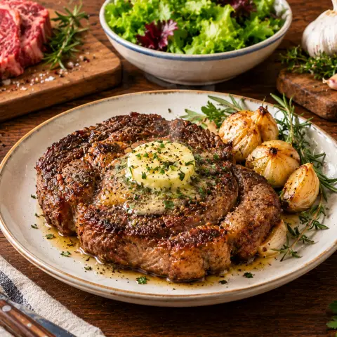

🥩 마늘버터 스테이크
버터, 마늘, 타임을 끼얹어 구운 꽃등심 스테이크. 집에서 레스토랑 맛을.
재료
- 꽃등심 스테이크600 g
- 식용유1 큰술
- 소금기호에 맞게
- 후추기호에 맞게
- 버터75 g
- 타임6 대
- 마늘5 쪽
만드는 법
- 2.5cm 두께의 스테이크를 30분 전에 냉장고에서 꺼내 물기를 닦아요.
- 두꺼운 팬에 기름을 두르고 센불에서 연기가 날 때까지 달궈요. 소금과 후추를 넉넉히 뿌리고 겉면이 생길 때까지 2–2분 30초 구운 뒤 뒤집어요.
- 1분 뒤 고기를 한쪽으로 밀고 버터, 으깬 마늘, 타임을 넣어요(튈 수 있으니 조심). 녹은 버터를 약 2분간 고기에 끼얹으면 미디엄 레어(속 온도 52°C)가 돼요.
- 호일을 느슨하게 덮어 5–10분 레스팅한 뒤 팬의 버터를 뿌려요.